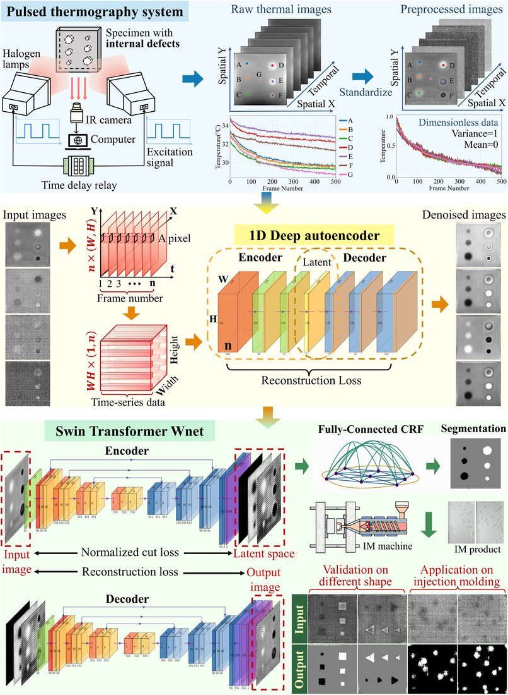
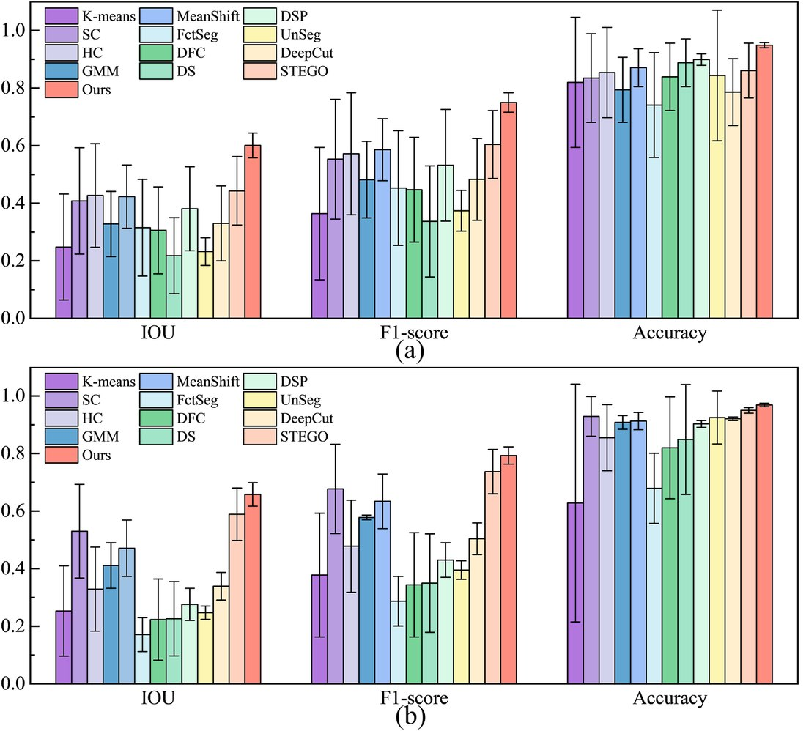

红外热成像内部缺陷无监督分割（DAE-SWnet）Unsupervised Infrared Internal-defect Segmentation (DAE-SWnet)
针对工业内部缺陷“有效标注样本稀缺”的痛点，用脉冲热成像的温度演化规律从仅 2 个缺陷样本生成 1.6 万张热图，并提出无监督分割框架 DAE-SWnet（自编码去噪 + Swin Transformer + Wnet），缺陷分割达 74.0% IoU、84.3% F1、97.7% 准确率，单张推理 0.278s。To beat the scarcity of labeled internal-defect samples, it uses pulse-thermography temperature evolution to expand just 2 defect samples into 16,000 thermal images, and proposes the unsupervised DAE-SWnet (denoising autoencoder + Swin Transformer + Wnet), reaching 74.0% IoU, 84.3% F1, 97.7% accuracy at 0.278 s/image.
背景Background
红外热成像可看内部缺陷但噪声大、加热不均；传统算法处理非线性差，监督深度学习又依赖大量标注（工业不现实）。Infrared thermography reveals internal defects but is noisy and unevenly heated; classical methods handle nonlinearity poorly, and supervised deep learning needs lots of labels (impractical in industry).
方法Method
- 数据增广：用脉冲热成像把 2 个样本扩成 1.6 万张热图。Augmentation: expand 2 samples to 16,000 thermal images via pulse thermography.
- 自编码器去噪（发现“重构损失—去噪效果”非单调关系）。Denoising autoencoder (found a non-monotonic loss–denoising relationship).
- Swin Transformer + Wnet 协同分割，优化编解码通道。Swin Transformer + Wnet jointly segment, with optimized encoder/decoder channels.
- 仅用人工设计缺陷训练即可泛化到不同材料 / 形状。Trained only on designed defects, it generalizes across materials and shapes.
结果Results
- 74.0% IoU / 84.3% F1 / 97.7% 准确率，平均推理 0.278s。74.0% IoU / 84.3% F1 / 97.7% accuracy, 0.278 s/image.
- 跨材料、跨缺陷形状泛化良好。Generalizes well across materials and defect shapes.
图片Figures


本人熟悉其方法思路（领域学习 / 技术调研）；论文一作为课题组其他成员。I am familiar with the method (domain study / technical review); first authorship belongs to other lab members.